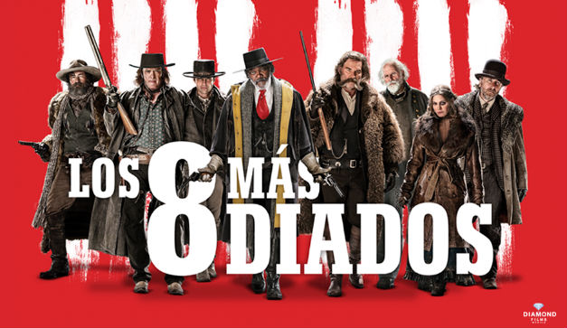
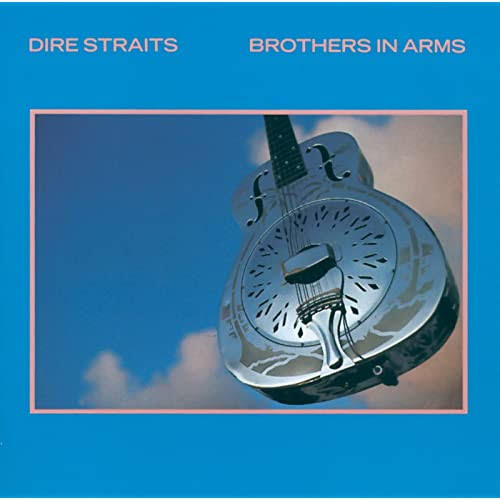
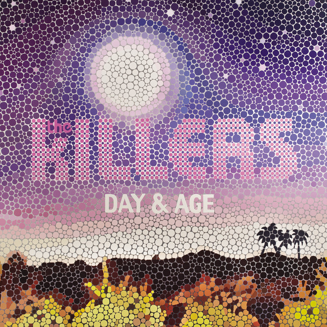

Películas y Series Favoritas  Los 8 más odiados Quentin Tarantino (2015) Ver en IMDb ↗ Mr. Robot Sam Esmail (2015/2019) Ver en IMDb ↗ Silo Graham Yost (2023/2026) Ver en IMDb ↗
Discos Favoritos  Brothers in Arms Dire Straits (1985) Escuchar en Spotify ↗ En la Ciudad de la Furia Soda Stereo (1988) Escuchar en Spotify ↗  Human The Killers (2008) Escuchar en Spotify ↗